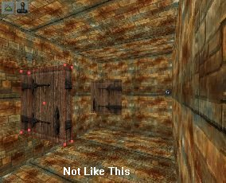
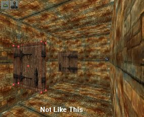
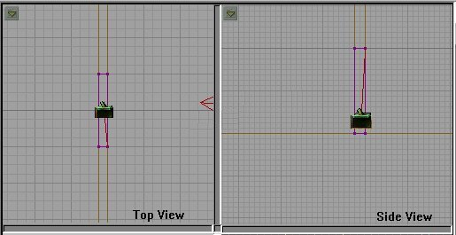

There are several types of movers in Unreal. I am not going to get into a WHOLE lot of detail on each kind, but I will cover the major types and give enough information on each one to get you started. As with anything in UnrealED the best way to learn is to do. I will give you a basic of understanding on how different types of movers work, and then give you some specific properties of each and turn you loose. This is a two part tutorial. The Mover types covered in each part will be as follows:
Simple Movers Part One
Rotating Movers Part Two
Looping Movers Part Two
Attach Movers Part Two
This is Part two of the Movers Tutorial. If you haven't read Part one yet, go back and do so first. I'll be here when you get back and I will make everyone else wait for you before we get started. :) In part one we covered basic movers, a couple simple doors and a lift. This tutorial will cover rotating movers and other types.
This part would probably have been in the first tutorial since this first mover we are going to make is not a true rotating mover, but a simple mover that rotates on an axis. Let me explain.
The doors we made in part one were sliding doors. They slid up and down, or side to side. The door we are going to make now opens like a door in your house. It swings open on its side axis. They are pretty simple to make, but a lot of people don't know how. We will fix that. You will be making swinging doors in no time at all.
Okay, to start with we need a starting room and a builder room. I suggest using the NaliCast.utx textures for this tutorial. Make the start room 256 x 512 x 512. Make the builder room 512 x 512 x 512. Now make short hall way, 128 x 128 x 16 and attach it to one side of the room. Copy the first room and put it on the other side of the short hallway. You should have something like this:


Now the fun part! Go into your builder room and make a cube 128 x 128 x 16. Add it, then pick a good door texture (like SDOORN - it's 128 x 128). When you align the textures on your door, be sure to make the opposite side of the door go the opposite way. That is to say, you want the "hinge" part of the texture on the same edge on both sides of the door brush.
 
Once you have the door textures aligned, intersect the brush and drag it over to the little hallway between the two rooms. Light it up so it fills the hallway. Now, add a mover. Now when you highlight the mover, see that little red cross right in the middle? That is your PIVOT POINT. It is all IMPORTANT when making rotating movers! If you rotate the mover now, it will rotate on that cross as it's center point. Go ahead and rotate it and see then rotate it back. Now that might me cool for some effects, but not out little swinging door. We need to move that pivot point to a corner of the door. It is VERY easy to do. When the mover is highlighted, simply click the vertex you want to be the pivot point and the cross moves to that vertex.


Now when you rotate the mover, it rotates on the new center point, and you can see, that is how we want our door to open. With the door in it's original position, set key frame one. Now rotate the door to it's open position and click Key frame 0.


Now we have the door moving the way we want it we need to do something so it works right. But before we do , add a player start (where indicated below), add some lights, rebuild and test the map.

Notice that when we approach the door, it starts to open but then closes right back? That's because of the doors MoverEncroachType. The default setting is ME_ReturnWhenEnchroach. That simply means that if someone is blocking the door it will politely say "excuse me" and close again. We need to fix that if we want to be able to open the door from both sides. We could set it to ME_CrushWhenEncroach but that would cause our little player to explode upon impact with the door. That would suck because we wouldn't ever be able to see all the cool stuff on the other side of the door (not that there is anything in there yet, but our player doesn't know that!). Anyway, let's set it to ME_IgnoreWhenEncroach. This will cause the door to "pass thru" any blocking player. Not a very realistic effect, but sufficient for this step in the tutorial.
Rebuild and run the map again. Ahhh...much better. Well, almost. The door is "funny" the way it passes thru you when it opens. It's cool when you go back through it from the other side, but I can't live with that passing though me stuff! And it's silent! First go set the sounds like we did in the last tutorial. Now, reset the MoverEncroachType to ME_ReturnWhenEncroach. Now we need to add a trigger to activate the door. First set the mover's InitialState (under Object) to TriggerOpenTimed. Then under Events give it a unique tag (like "door1"). Add a trigger and set it's Event to the mover's tag. Now move the trigger in front of the door, set it far enough back so that the door won't hit you when you activate the trigger.

Now rebuild and try it again. Go on, I'll wait. HA! Gotcha. You couldn't get back through the door could you? That's because the door is only activated by a trigger and there is no trigger on the other side. There are two ways to do this. One, move the trigger to the center of the door and set it's collision radius big enough to activate it on both sides. The other is to duplicate the trigger and move the new one to the opposite side of the door. Let's take the first option.
Reset the collision radius on the trigger to 156. Why 156? Because the door is 128 units in length and we want to activate it before we touch the door (remember, if we touch it while it's opening it will just close again). now move the trigger to the center of the door.
Rebuild again and test. Presto! You have a swinging door that works! You probably noticed that if you kept moving forward once the door was activated, you still hit it and it closed. The work around is to reset the MoverEncroachType to ME_IgnoreWhenEncroach. The effect isn't nearly so Unrealistic (pun intended) when you actually see the door opening before you. Rebuild again and try it out. Now play with the door. Set it's encroach type to different things and see how it reacts, and play with the triggers collision radius. You should be able to find the best setting on your own.
The rotating door, though it rotates to it's key frames, is not a real rotating mover. It's time to actually build a real rotating mover now. You can start a fresh map, or continue working on the one you started with. It doesn't really matter. Either way, we are going to build the rotator in a new room. But first we have to decide what kind of rotating mover we want. For this tutorial we are going to make something fairly simple, just to get an idea of how to do rotators. Let's make a rotating wall trap. When we are finished it will look like this:

A Rotating brush is a brush that rotates on a specified axis. You don't need key frames for it to move. In UnrealEd (and every other 3d editor) there are three axes (the plural of axis) that we use to determine an object's location. They are X Y Z. You can differentiate these by looking at the 2D view window's properties and seeing that X is the top right window, and Y is the bottom right window. Z is actually the top view, because Z is up and down. A Rotating brush will move on these axis but the direction it rotates is determined using Pitch Roll and Yaw. If you have any flying experience (or simulator experience) you will understand these concepts immediately. If you don't then think of it this way:
Okay....first let's make a hall for it to go into. Coming off the second room in our little map, make a room 512 x 1024 x 512 so that it makes an "L" with the first two rooms. Like This:

Next thing we need to do is make another builder room. Our needs have outgrown the previous room, as the new mover we are going to make will be to big to properly fit in the old builder room. Go ahead and delete the old builder room and anything in it. Rebuild Geometry and then subtract a new builder room 2000 x 2000 x 2000. This should be plenty big enough. Once you have the room subtracted, then resize the cube to 512 x 16 x 512. Add the brush to the world, give it a wall texture and then intersect it like any other mover. This should make the mover a "wall" that will fill the hallway we made for it. We know we want this to be a rotating mover so we have to set that property before we add the mover. In the Browser, go to Brush, then Mover and click on RotatingMover.

Now move the red brush into the hall we made for it (somewhere in the middle) and then click on the Add Mover Button. If you highlight the mover and right click now, it should say "RotatingMoverProperties." now we have a rotating mover, but we need to tell it which way to rotate (see Pitch, Roll, Yaw above). We want this mover to rotate it's Roll, so that it is spinning parallel to the hallway.

So we need to set it to rotate on the Roll. To do that open up the RotatingMoverProperties dialog and near the bottom expand RotatingMover (see below). There are three fields here under the heading RotateRate. Oddly enough they are Pitch, Roll and Yaw. This is where you tell the engine how fast and which direction you want the rotator to move in. Guess which one we want to set? Right! Roll. And how fast? Well, let me tell you, 100 is pretty slow. So pick a speed about 1000 and see how you like that. Note: don't bother checking it now, we haven't activated the mover yet. Keep reading.

We also need to set some properties of the mover. First thing to do is give the trap an Event Name (something original and fun like....trap1). Next, under Object, set the InitialState to None. Under Mover, set the Numkeys to 0 (so the mover knows there are no key frames to worry about).
Add a light on either side of the mover, then rebuild and test the map. The mover should Roll end over end. Great. But what happens when you approach the trap while it's moving? Right, it goes back to the start and stops moving. That's because we have the Encroach set to ME_ReturnWhenEncroach. Open up the RotatingMover properties and under Mover set the MoverEncroachType to ME_CrushWhenencroach. Now rebuild and check it again. See what happens. Now if you run under the mover all is well, but if you touch it while it's moving you hear a scream and see body parts. But damn, that mover still goes awful slow! No too much of a challenge. Reset the RotateRate to 2000. That should do it.
Now we have a rotating wall in the middle of the hall you have to run under without touching it. Not a bad little trap.
Now go build a rotating mover (any shape you want) and practice playing with the rotation direction (Pitch, Roll and Yaw) and with the rotation rates. You can make some really cool objects (not just traps) with rotating movers. Experiment and have fun!
A looping mover is a mover that is constantly moving. Like our trap we just made. So technically you just made a looping mover. If you select LoopMover (like we selected RotatingMover) you will get a slightly different dialog box. It has nothing special (like the RotatingMover had is's own RotatingMover field section. No, it's all in the settings. You can set it to rotate (like we did the trap --only the RotationRate is under Movement). The only thing you need to set is under Object, InitialState. Set it to LoopMove. Let's make a quick one. Expand our hallway past the trap another 512 units (set the cube to 512 x 512 x 512 and place it against the hallway at the far (South) end. Subtract it. Back in the builder room make a cube 128 x 128 x 128. Give it a unique texture (I used Nalicast.utx Block2B) and intersect it. Now move the red brush to the new section of hallway and rotate it like this:

Move the brush near to, but not touching the South wall. If you're not already there, in the Browser select LoopMover and then add it to the world. It should look like this:

Now open the LoopMoverProperties and set the InitialState to LoopMove. Then under Movement set the rotation rate for Pitch to 2000.

Add a light and rebuild. Let's go check it out. You should have a cube slowly spinning against the wall. I know, not very practical, but hey, it loops and that is the point! I am not here to give you ideas for your levels, but to give you some tools to implement those wonderful ideas floating around in that twisted little head of yours! :) You may have noticed a weird effect on our mover. Only the side that was facing the light in the Movers "at rest" position was lit. There are a couple ways to combat this. One, select all the surfaces of your brush before you intersect it and set them to unlit. The other is to add lights all around the mover. One way of doing that is to give the surfaces of your brush (before you intersect it) the Special Lit property and then add lights all around it with the Special Lit (under Lighting) option checked.
This is a cool type of mover. With this mover you can "attach" actors to it so that they move in relation to the mover. We will make three different Attach Movers in this tutorial.
Simple Attach MoverThe first is going to be a simple moving brush with an object attached to it. Start by moving your brush to the builder room and making the cube 16 x 128 x 128. Add it and give it a cool texture. Now intersect it and move it to the room where your PlayerStart is. Place the brush on the floor, in the northeast corner (upper right). In the Browser chooses classes, brush, movers, AttachMover and then press the ADD MOVER button. Set Key frame one to the Northwest corner (upper left) of the room. Now under Inventory-PickUp add an Armor just above the mover, but towards the north wall, away from the edge of the mover. Leave all the mover properties at their default except under AttachMover set the Attach Tag to "item1" (this is the tag of the attach mover and will also be the tag of the item we want to move with it--in this case the armor). Set the armor tag (under event) to "item1"
Now we have just linked the armor to the mover. The mover is set to BumpOpenTime so if we walk up to and bump the edge of the mover it should now slide along the floor taking the armor with it. Rebuild and test it out. Notice you can still pick up the armor. You can even ride the mover with the armor. This will work with other entities too. I have not played with too many different ones, but I have found that if you use a weapon it will move with the brush but you can't pick it up. If I discover how to do that in the future I will amend this tutorial. If you find out first, let me know!
Invisible Attach MoverYou can make a visible attach mover (or any mover for that matter) by simply selecting all the textures of a brush to invisible and then intersecting it and making the mover. Let me show you.
First go to the builder room and make a 32 x 32 x 32 cube and add it. It doesn't matter what texture you use because it will disappear shortly. Select any face of the brush and then right and open Surface Properties. Check the Invisible box. You brush should disappear in the 3D view. If you look in a 2D view it's still there. If you want to be able to see it in the 3D view then click the joystick ICON or click anywhere in the 3D view and then press P. Now resize the brush and intersect the invisible brush. Move the red brush to the start room and add an AttachMover on the south wall (opposite of the 1st attach mover) and place it near the ceiling. Set the key frames the same as the 1st attach mover. Now give the invisible mover a tag name under events (invis1) and add a trigger, giving the trigger event the same name as the tag on the invisible mover (invis1). Move the trigger to the middle of the room, near the floor. Set the mover's InitialState to TriggerOpenTimed. Set the AttatchTag in the mover to "item2" and add a Flare just underneath the mover, giving it a tag of "item2". Now rebuild and when you stand in the center of the room it flare should move across the floor and a couple seconds later move back. You can pick up the flare if you want. You can do some cool stuff with this if you use your imagination!
Moving Lights!Which brings us to moving lights! There are a couple ways to do this. You may or may not have heard of the moving lighted brush. I can do that but with less than wonderful results. The best way I have found is using an AttachMover. Follow along and you can do it, too!
Start by making a hall running North off the first room. Make it 256 x 256 x 256. Now set the Brush to 256 x 256 x 512 and attach it to the new hallway like this:

Now, in the builder room we need to make another invisible brush. You can use the same 32sq cube we used before. Interesct it, take the red brush back to our new hall, and add an Attach Mover near the ceiling on the East end of the room.


Add key frame 1 at the far end of the room. Give the mover a tag of "movelite1" and an attach tag of "lite1" and make sure it's InitialState is TriggerOpenTimed. Add a trigger in the 256sq hallway, right in the middle (near the floor) and give it an event of "movelite1." Go to the Browser, choose Classes and expand Light. See the FlashLightBeam? Select it. Add a light just below the mover. Right click it's properties (making sure it says FlashLightBeam Properties) and give it a tag of "lite1" Rebuild and run the map. When you walk into the 256sq hallway the light should move down the hall, pause and come back. Cool, huh? :)
We have learned a lot about movers in this tutorial. You have learned in a just a little while what it took me months to learn. As always, expand on what I have taught you and you can really do some amazing stuff with movers. The moving light thing is not widely known in the Unreal editing community and I thought about not adding it so I would have "a trick up my sleeve" when it came to releasing new maps. But that is not why I am writing these tutorials (obviously). It is to share what I have learned and make Unreal Editing a more pleasant experience for everyone brave enough to fire up the editor and attempt to CREATE something.
I wouldn't mind a mention in your readme file if you make a really kick ass level with the knowledge you got from these tutorials either. :)
Happy Mapping!